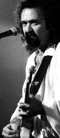
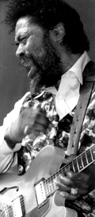
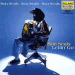

|
 Tinsley Ellis:"В основном это вполне прямолинейный рок-блюзовый альбом. Но есть и прикосновения современности - хотя я не уверен, что они для всех очевидны."Тинсли Эллис сменил "Аллигатора" (Alligator Records) на "Казерога" (Capricorn), пояснив, что предпочитает ощущать себя блюзовым гитаристом на рок-лейбле, а не рок-гитаристом - на блюзовом. В новом альбоме "Главная фигура" (Kingpin) известный блюз-рок-гитарист играет прямолинейный блюз с вкраплениями новомодных ритмов. "Не сразу мне понравился рэп и хип-хоп, но в конце-концов меня пронял ритм, и в некоторых местах мы использовали несколько закольцованных барабанных сэпмлов, чтобы добиться соответствующего звучания. Лучше всего это заметно на "Придется использовать свое воображение" ('I've Got to Use My Imagination,'), песне, которую я впервые услышал в исполнении Глэдис Найт (Gladys Knight). Однако подспудно это присутствует и в еще нескольких местах." "Я сейчас на том шаге карьеры, когда, мне кажется, я могу лучше выразить себя в моих собственных песнях. Частично, может быть, это объясняется тем, что я стал писать получше, но в основном это потому, что мне удобней себя ощущать в своей музыке... Когда я исполняю что-то вроде "Не стану играть так" ('Can't Play That Way'), я точно знаю, для чего эта песня, и как передать ее смысл наиболее понятно." Но и интерпретации по-прежнему интересуют Эллиса, хотя он предпочитает вытащить на свет полузабытый блюзовый алмаз, вроде "Старых деньков ("Days of Old") БиБиКинга (B.B.King), нежели продолжать трепать слишком часто исполняемые стандарты. "Эта всегда была одной из моих любимейших песен БиБи, - говорит Эллис.- Я многие годы исполнял ее на сцене, так что для меня она стала стандартом, хотя я догадываюсь, что она не из самых известных его песен. Но мне она - самый оно. И это для меня единственный довод, когда я выбираю материал для исполнения." Аккомпанирует Эллису группа, состоящая только из "звезд". В ней играют барабанщик Ричи Хэйвард (Richie Hayward), прославившийся в группе "Литл Фит" (Little Feat) и выступавший с Бадди Гаем. А так же клавишник Риз Вайнанз (Reese Wynans), игравший в "Дабл Трабл" Стиви Рея Воэна.
|
|
 Son Seals"I've just been going a little see-saw-y, up and down, up and down. You know, I'm still here,"Son Seals, чья карьера так же накрепко связана с "Эллигейтор", покинул фирму. Казалось, это невозможно, поскольку он выпустил дебютную пластинку благодаря поддержке "Эллигейтор", и с тех пор на протяжении 25 лет все его альбмоы издавались исключительно этим лейблом. Однако 25 апреля официально вышел в свет его альбом на фирме "Теларк" (Telarc Records) под названием "Lettin' Go" ("Отпуская", "Позволяя уйти"). Не вдаваясь в подробности, Сан Сиалз поясняет: впервые у меня договор, кокой я всегда хотел". Альбом с ним записывали: ветеран американского белого блюз-рока Эл Купер (Al Kooper), сотрудничавший в легендарные времена с Бобом Диланом и Майком Блумфилдом (Michael Bloomfield); и относительно новое лицо на блюзовой сцене - гитарист Джимми Вивино (Jimmy Vivino), который в последней пятилетке как ведущий гитарист записал альбом госпелл-музыки с Сисси Хьюстон (Cissy Houston), родной тетей Уитни, и феноменальный дебютный альбом Шимекии Коплэнд (Shimekia Copeland). Кроме того, он руководил ансамблем какой-то популярной телепрограммы. "Так получилось, что Джимми играет любую музыку, - говорит Сиалз, - Но он любит блюз. Он сказал, что слушает мою музыку очень давно".  Полным сюрпризом является участие гитариста Трея Анастасио (Trey Anastasio) из группы "Фиш" (Phish). "Автоматически мы станем знакомы тем, кто пару месяцев назад и не подозревали о существовании Сона Сиалза, - говорит Сиалз.- Я играл с "Фиш" на нескольких их концертах. Я бы сказал, что 85% публики никогда прежде не слышали блюзовую песню. И потом, когда я сам выступал в других местах, ко мне подходили и говорили: "Мы вас впервые услышали на концерте "Фиш". И я сам понятия не имел, что меня ждет, когда я пошел на один их концерт. К моему удивлению, мне очень понравилось. Я сидел и получал удовольствие от их музыки. Я просто забыл, что мне надо выходить на сцену и играть с ними. Все потому что детишкам это нравилось, и мне нравилось тоже. Они играли в очень разнообразном стиле." Я объездил весь мир. Всюду, где есть последователи этой музыки, я побывал. Во многих местах я побывал уже не однажды и не дважды. Я в постоянных гастролях находился с 1974 года, не считая последних двух лет, когда я вышел из гонки. В Чикаго за последние два года я и двух раз не играл. Новая аудитория, новый лейбл, новый альбом... Для 57-летнего выдающегося гитариста Сона Сиалза открыть новый этап было очень важно. Он не случайно упомянул, что отдохнул от гастролей за последние два года. В 1997 году ему в лицо выстрелила его (теперь уже бывшая) жена. И в тот период, когда ему долго и мучительно, в ходе нескольких операций, реконструировали челюсти, разщвились осложнения от диабета, которым он давно страдает, и ему пришлось была частично ампутировать левую ногу... "Меня штопали то сверху, то снизу, то сверху, то снизу... И чтобы вы думали, я остался в строю" - Сан Сиалз. |
{kind=link}
{kind=link}